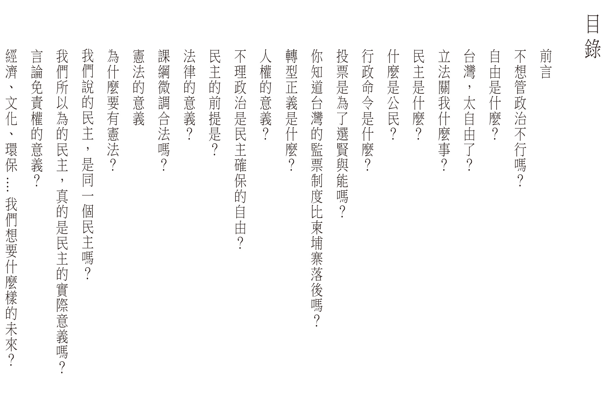

democracy de cafe
我們認為對於議題、政府運作制度的不夠瞭解
是阻礙一般民眾針對議題做深入討論
讓政治討論淪於八卦口水的主因
在318之後，我們一直在思考，大部分的人為了忙於工作，能夠用在關心政治的時間實在很有限。對很多人來說，政治看起來很遙遠，但實際上我們生活的種種都跟政治有關。到底該怎麼做，才有辦法讓更多人可以用更簡單的方式瞭解社會議題，進而關心政治呢？
於是我們做了很多嘗試，我們成立了「國會調查兵團」網站，讓一般民眾可以在這個網站上直接投稿立委的表現。我們希望透過這個方式，鼓勵大家可以去看立法院議事影片紀錄，把看到的立委表現記錄在這個網站。
然而我們發現，門檻還是太高了，於是我們有志工用幾乎全職的方式投入觀看立委質詢影片，定期產出精彩的質詢片段。並且成立「公民廟口」粉專傳播這些影片。希望可以讓更多人直接透過影片瞭解立委在立法院的表現。我們也成立了「杜老爺小酒館」，試圖用漫畫的方式，表達我們對時事的看法。
我們認為對於議題、政府運作制度的不夠瞭解，是阻礙一般民眾針對議題做深入討論、讓政治討論淪於八卦口水的主因。我們覺得民眾並不是不願意討論議題，而是沒有管道可以幫助民眾瞭解議題，以至於無從思辨。於是我們試圖用比較軟性的文字，成立「蒂瑪小姐咖啡館」粉專，用貼近生活的例子，聊聊這些新聞事件背後所延伸出來的制度問題。
我們是「國會調查兵團」，我們相信當關心政治的門檻可以被降低，就能夠讓政治討論不再只是名嘴、立委的專利。我們希望讓監督立委、監督政府變成每一個人都有能力做的事，而台灣的政治風氣也才能因此改變。
關心政治除了需要熱情，也需要經濟支撐。這一年半來，「國會調查兵團」用志工模式完成了一個網站（cic.tw）、每天盯ivod並剪輯了152支立委質詢影片、產出了破百篇的文章、產出八十來篇對時事嘲諷的圖文。針對食安修法找了國民兩黨立委做了食安訪談，並整理逐字稿紀錄公開於網路上。以蒂瑪小姐咖啡館粉專為主辦舉辦了5場的現場D day活動。
我們對關心政治、推廣降低政治參與門檻有著極大的熱情，但人終歸需要生活。針對2016立委總統選舉前夕，我們向公民覺醒聯盟提出「國會調查兵團立委選前密集監督計畫」專案企劃。這個企劃從11月開始，1月底結束，但監督以及對於議題的討論，不應該只是選前的事情。不管未來當政者是誰，只有當人民都能夠對政治有足夠的思辨能力，不因人廢言、就事論事，學習如何跟意見不同的人交流與溝通，這才是能讓台灣民主繼續走下去的關鍵。
「蒂瑪小姐咖啡館」要出書了，這是「國會調查兵團」這一年來的心血結晶。如果你願意支持我們繼續寫下去、繼續監督國會，或是你願意幫助我們，讓不熟悉上網的長輩們也能夠看到這些文章，請買一本書，讓我們可以繼續走下去。
包涵以下目錄條列，共21篇文章

約三個月。我們希望2016年2~4月使用本次盈餘執行這兩個部份：
一、監督新立委，持續產出監督影片。
二、國會調查兵團網站維護
如果初版一刷有順利賣完，讓「國會調查兵團」計畫得以繼續下去，後面也會考慮將其他文章也集結出書，讓「國會調查兵團」可以持續運作。
這是我們第一次嘗試用賣書的方式籌措兵團計畫的經費，由於無法預期銷量，另外也有倉儲空間的考量，因此才會決定最多500本。
如果預購未達500本，我們會看實際銷量去印刷。盈餘一樣會使用於「國會調查兵團」計畫，但可能無法執行到3個月，盈餘用盡後計畫有可能會終止，特別是針對盯立委質詢、剪輯影片的部份，因為這個部份是最花時間的，必須要有正職人力才有辦法持續產出。